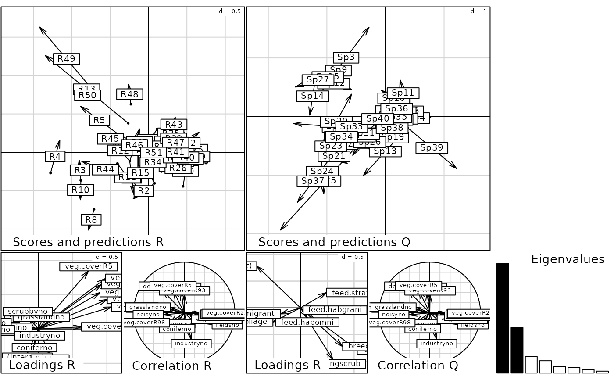

Double principal component analysis with respect to instrumental variables
dpcaiv.RdIt includes double redundancy analysis (RDA, if dudi argument is created with
dudi.pca) and double canonical correspondence analysis (CCA, if dudi
argument is created with dudi.coa) as special cases. The function dvaripart
computed associated double (by row and column) variation partitioning.
Usage
dpcaiv(dudi, dfR = NULL, dfQ = NULL, scannf = TRUE, nf = 2)
# S3 method for class 'dpcaiv'
plot(x, xax = 1, yax = 2, ...)
# S3 method for class 'dpcaiv'
print(x, ...)
# S3 method for class 'dpcaiv'
summary(object, ...)
# S3 method for class 'dpcaiv'
randtest(xtest, nrepet = 99, ...)
dvaripart(Y, dfR, dfQ, nrepet = 999, scale = FALSE, ...)
# S3 method for class 'dvaripart'
print(x, ...)Arguments
- dudi
a duality diagram, object of class
dudi- Y
a duality diagram, object of class
dudior a responsedata.frame- dfR
a data frame with external variables relative to rows of the
dudiobject- dfQ
a data frame with external variables relative to columns of the
dudiobject- scannf
a logical value indicating whether the eigenvalues bar plot should be displayed
- nf
if scannf FALSE, an integer indicating the number of kept axes
- x, object, xtest
an object of class
dpcaivordvaripart- xax
the column number for the x-axis
- yax
the column number for the y-axis
- nrepet
an integer indicating the number of permutations
- scale
If
Yis not a dudi, alogicalindicating if variables should be scaled- ...
further arguments passed to or from other methods
Value
returns an object of class dpcaiv, sub-class of class dudi
- tab
a data frame with the modified array (predicted table)
- cw
a numeric vector with the column weigths (from
dudi)- lw
a numeric vector with the row weigths (from
dudi)- eig
a vector with the all eigenvalues
- rank
an integer indicating the rank of the studied matrix
- nf
an integer indicating the number of kept axes
- c1
a data frame with the Constrained Principal Axes (CPA)
- faQ
a data frame with the loadings for Q to build the CPA as a linear combination
- li
a data frame with the constrained (by R) row score (LC score)
- lsR
a data frame with the unconstrained row score (WA score)
- l1
data frame with the Constrained Principal Components (CPC)
- faR
a data frame with the loadings for R to build the CPC as a linear combination
- co
a data frame with the constrained (by Q) column score (LC score)
- lsQ
a data frame with the unconstrained column score (WA score)
- call
the matched call
- Y
a data frame with the dependant variables
- R
a data frame with the explanatory variables for rows
- Q
a data frame with the explanatory variables for columns
- asR
a data frame with the Principal axes of
dudi$tabon CPA- asQ
a data frame with the Principal components of
dudi$tabon CPC- corR
a data frame with the correlations between the CPC and R
- corQ
a data frame with the correlations between the CPA and Q
References
Rao, C. R. (1964) The use and interpretation of principal component analysis in applied research. Sankhya, A 26, 329–359.
Obadia, J. (1978) L'analyse en composantes explicatives. Revue de Statistique Appliquee, 24, 5–28.
Lebreton, J. D., Sabatier, R., Banco G. and Bacou A. M. (1991)
Principal component and correspondence analyses with respect to instrumental variables :
an overview of their role in studies of structure-activity and species- environment relationships.
In J. Devillers and W. Karcher, editors. Applied Multivariate Analysis in SAR and Environmental Studies,
Kluwer Academic Publishers, 85–114.
Ter Braak, C. J. F. (1986) Canonical correspondence analysis : a new eigenvector technique for multivariate direct gradient analysis. Ecology, 67, 1167–1179.
Ter Braak, C. J. F. (1987) The analysis of vegetation-environment relationships by canonical correspondence analysis. Vegetatio, 69, 69–77.
Chessel, D., Lebreton J. D. and Yoccoz N. (1987) Propriétés de l'analyse canonique des correspondances. Une utilisation en hydrobiologie. Revue de Statistique Appliquée, 35, 55–72.
Author
Stéphane Dray stephane.dray@univ-lyon1.fr
Lisa Nicvert
Examples
# example of a double canonical correspondence analysis
data(aviurba)
coa <- dudi.coa(aviurba$fau, scannf = FALSE)
dcca <- dpcaiv(coa, aviurba$mil, aviurba$trait, scannf = FALSE)
dcca
#> Dcouble canonical correspondence analysis
#> call: dpcaiv(dudi = coa, dfR = aviurba$mil, dfQ = aviurba$trait, scannf = FALSE)
#> class: dcaiv dpcaiv dudi
#>
#> $rank (rank) : 8
#> $nf (axis saved) : 2
#>
#> eigen values: 0.1969 0.08182 0.02968 0.02217 0.01136 ...
#>
#> vector length mode content
#> $eig 8 numeric eigen values
#> $lw 51 numeric row weigths (from dudi)
#> $cw 40 numeric col weigths (from dudi)
#>
#> data.frame nrow ncol content
#> $Y 51 40 Dependant variables
#> $tab 51 40 modified array (projected variables)
#> $dfR 51 11 Explanatory variables for rows
#> $dfQ 40 4 Explanatory variables for columns
#>
#> data.frame nrow ncol content
#> $c1 40 2 PPA Pseudo Principal Axes
#> $asR 2 2 Principal axis of dudi$tab on PAP
#> $lsR 51 2 projection of lines of dudi$tab on PPA
#> $asQ 2 2 Principal axis of dudi$tab on PAP
#> $lsQ 40 2 projection of lines of dudi$tab on PPA
#> $li 51 2 $lsR predicted by R
#>
#> data.frame nrow ncol content
#> $l1 51 2 CPC Constraint Principal Components
#> $faR 18 2 Loadings (CPC as linear combinations of R
#> $corR 17 2 correlation CPC - R
#> $faQ 9 2 Loadings (CPC as linear combinations of Q
#> $corQ 8 2 correlation CPC - Q
#> $co 40 2 inner product CPC - Y
#>
summary(dcca)
#> Double canonical correspondence analysis
#>
#> Class: dcaiv dpcaiv dudi
#> Call: dpcaiv(dudi = coa, dfR = aviurba$mil, dfQ = aviurba$trait, scannf = FALSE)
#>
#> Total inertia: 0.3615
#>
#> Eigenvalues:
#> Ax1 Ax2 Ax3 Ax4 Ax5
#> 0.19687 0.08182 0.02968 0.02217 0.01136
#>
#> Projected inertia (%):
#> Ax1 Ax2 Ax3 Ax4 Ax5
#> 54.460 22.634 8.211 6.132 3.142
#>
#> Cumulative projected inertia (%):
#> Ax1 Ax1:2 Ax1:3 Ax1:4 Ax1:5
#> 54.46 77.09 85.30 91.44 94.58
#>
#> (Only 5 dimensions (out of 8) are shown)
#>
#> Total unconstrained inertia (coa): 2.659
#>
#> Inertia of coa explained by aviurba$mil and aviurba$trait (%): 13.59
#>
plot(dcca)

randtest(dcca)
#> class: krandtest lightkrandtest
#> Monte-Carlo tests
#> Call: randtest.dpcaiv(xtest = dcca)
#>
#> Number of tests: 2
#>
#> Adjustment method for multiple comparisons: none
#> Permutation number: 99
#> Test Obs Std.Obs Alter Pvalue
#> 1 Model2 0.1359425 4.329949 greater 0.01
#> 2 Model4 0.1359425 2.193395 greater 0.02
#>
dvaripart(coa, aviurba$mil, aviurba$trait, nrepet = 99)
#> Variation Partitioning
#> class: dvaripart list
#>
#> Test of fractions:
#> class: krandtest lightkrandtest
#> Monte-Carlo tests
#> Call: dvaripart(Y = coa, dfR = aviurba$mil, dfQ = aviurba$trait, nrepet = 99)
#>
#> Number of tests: 4
#>
#> Adjustment method for multiple comparisons: none
#> Permutation number: 99
#> Test Obs Std.Obs Alter Pvalue
#> 1 ab(R) 0.4215783 3.969993 greater 0.01
#> 2 bc(Q) 0.2556643 2.002752 greater 0.02
#> 3 b(RQ)_Rperm 0.1359425 4.476797 greater 0.01
#> 4 b(RQ)_Qperm 0.1359425 2.054284 greater 0.04
#>
#>
#> Individual fractions:
#> a b c d
#> 0.2856358 0.1359425 0.1197218 0.4586999
#>
#> Adjusted fractions:
#> a b c d
#> 0.09030311 0.03351889 0.01377559 0.86240242